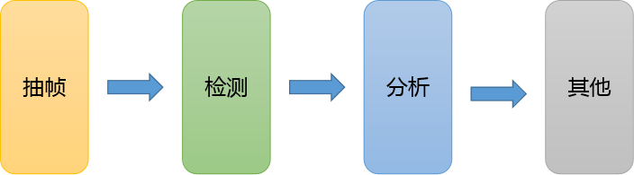
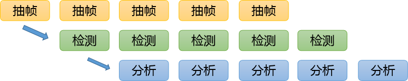

嗯，很久没有写博客了，最近的工作都是偏开发性质的，以至于没有时间对自己感兴趣的领域进行探索，感觉个人的成长停滞了一些。如何在枯燥的工作中，提取出有助于自己成长的养分，对于每个人来说都是不小的考验。
这次，带来的是之前编写的一下挺简单的库，用来简化流水线作业的小框架。
Github: https://github.com/miaoerduo/easy-pipeline 欢迎Star和提交MR。
起因是这样的，组内有一个需求，需要挖掘视频中的检测难样本，这样可以极大地减少标注的量，从而降低成本。难样本挖掘的策略，简单来说就是如果视频的前几帧和后几帧都能检测到目标，而就只有当前帧没有检测到，就说明当前帧很可能存在漏检（没有检测本到该检测到的目标）；反之，如果前后都没有检测到目标，而当前帧检测到了，那就很可能是误检（检测到不是目标的东西）。

初步的方案是这样的，我们先把视频抽帧，直接用FFMpeg就可以方便的完成。然后调用现在的检测器，进行逐帧的检测，把检测结果存下来。最后写个脚本，分析检测的结果，然后输出可能有问题的帧，然后这些帧就会进行送标（发给标注员进行标注）。最终我们就只需要标注一些比较hard的样本就行了。
但是这样会带来很多的问题，最显著的两个：1. 需要保存大量的中间结果（图片帧）；2. 必须依次完成每一步之后，才能得到最终的结果。
这时候，相比大家都知道了该如何去解决。对的，我们应该用流水线作业的方式去进行。

首先我们可以将每部分任务并行的去处理。抽帧之后的结果送入队列；之后检测模块从队列取帧，检测之后将结果送入下一个队列；最后一个队列得到检测结果，再做最终的分析。相比于之前的方式，这样可以尽量的减少中间的结果。
实现该方案，只需要使用最简单的生产者消费者队列即可以完成。所以说，相信大家都十分了解了。对于上面的逻辑，我们需要的队列的数目和我们的模块数是正相关的。如果单纯的进行实现的话，实在的太麻烦了，给队列命名都要我们绞尽脑汁了。所以，为了更优雅的编写代码，这里就推出本文标题中的Easy Pipeline框架。
首先，我们举个最简单的例子来说明该框架的工作模式。输入一个数字的序列，按要求对他们进行加减乘除的操作（这里的每个操作，其实可以等价于前面的抽帧或是检测的更复杂的操作 ），并且支持每个操作的进程数。
from easy_pipeline import SimplePipeline, PipelineItem, Task, StopTask, EmptyTask
import multiprocessing as mp
# define our Task
class NumTask(Task):
def __init__(self, x):
super(NumTask, self).__init__()
self.val = x
# init function, here we use closure to get different function
def get_init_fn(x):
def init():
return x
return init
# operations
def plus(res, task):
return NumTask(task.val + res)
def mul(res, task):
return NumTask(task.val * res)
def minus(res, task):
return NumTask(task.val - res)
def div(res, task):
return NumTask(task.val / res)
if __name__ == '__main__':
# job queue
manager = mp.Manager()
job_queue = manager.Queue(1000)
# define pipeline and start
# x = （(x + 1) * 2 - 3）/ 5
pipeline_items = [
PipelineItem(plus, get_init_fn(1), 1, 10), # plus 1
PipelineItem(mul, get_init_fn(2), 2, 10), # mul 2
PipelineItem(minus, get_init_fn(3), 3, 10), # minus 3
PipelineItem(div, get_init_fn(5.), 4, 10), # div 5
]
pipeline = SimplePipeline(pipeline_items, job_queue)
pipeline.start()
result_queue = pipeline.get_result_queue()
# Feed jobs anytime (before StopTask)
for i in range(10):
job_queue.put(NumTask(i))
# get partial output
print('Get Output Start')
for i in range(5):
result = result_queue.get()
if isinstance(result, StopTask):
print("get stop task")
break
if isinstance(result, EmptyTask):
continue
print(result.val)
print('Get Output End')
# Feed jobs anytime (before StopTask)
for i in range(10, 20):
job_queue.put(NumTask(i))
# Stop pipeline, means no more job will be added then.
# Every process will exit when it has done all current jobs in job_queue
pipeline.stop()
# get all output
print('Get Output Start')
while True:
result = result_queue.get()
if isinstance(result, StopTask):
print("Output Queue Empty")
break
if isinstance(result, EmptyTask):
continue
print(result.val)
print('Get Output End')下面，我们来简单的说明一下工作逻辑。
- 首先，我们需要定义自己的任务Task。 只需要继承Task这个类即可，内部可以存放自己喜欢的任何数据。这里只是为了计算，所以就只存放了一个数字。
- 定义我们的初始化函数和工作函数。 初始化函数的作用是给每个进程初始化一些资源，如果不需要也可以不要。这里的初始化函数就是返回了一个值，表示操作数。工作函数是最重要的函数，他会处理接收到的Task，处理并返回新的Task（新的Task可以理解为处理的结果）。工作函数有两个输入，一个是资源，即初始化函数的返回值，另一个就是Task本身。
- 构建Pipeline。 每个工作模块都只需要用PipelineItem这个对象进行封装即可。器参数分别是：工作函数、初始化函数、进程数、结果队列的长度（-1表示不限长度）。结果队列的长度，通常设置为较大的值即可。因为不能的模块的处理速度可能不同，因此很容易出现结果堆积的现象，如果不支持队列长度，会导致内存的大量的占用。最后将PipelineItem的数组和输入的对垒传给SimplePipeline对象即可构建完我们的整套Pipeline程序了！
- 启动Pipeline程序，并输入数据。
- 得到结果！ 完事了，优秀。
上面这是一个最简单的例子，可以比较直观的感受到这个框架的便捷之处。完全屏蔽掉对队列，并发等的操作。
在我推荐给同事之后，确实一定程度地减小他的工作量，但同时，他也向我反馈了一些问题：这个框架在某些地方有些比较灵活的设计，应该给出足够多的实例，才能方便实用。关于该框架的设计思路和实例，将会在下一篇博客中进行详细介绍。
最后，欢迎大家Star和提交MR。愿与你们一同进步。